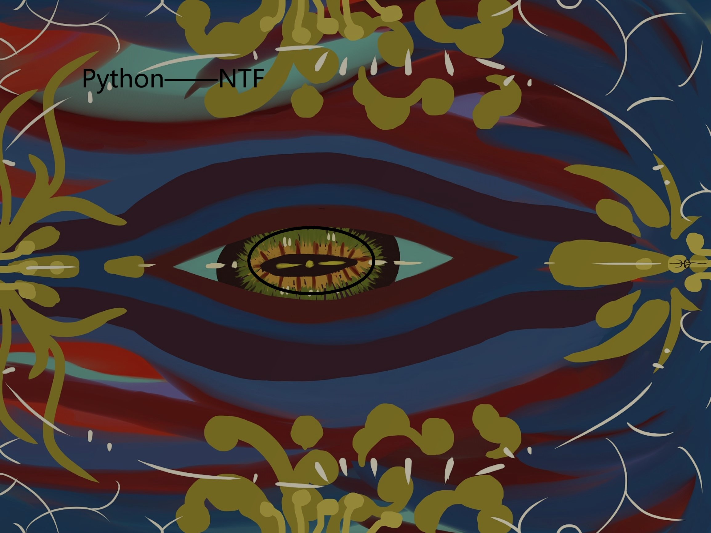

Welcome to where
🎈🎈🎈🎈🎈🎈》》》》》》》🐉🐉🐉🐉🐉🐉
Pass the token: Python
Token symbol: Python
Chinese name: boa constrictor
Total circulation: 10 billion
Anaconda was initiated by a group of high consensus blockchain believers, a truly decentralized, truly community autonomous community.
No project side, no banker, no trader, no back door, no system and mode.
It will grow along with the whole community!
Snake change dumpling change dragon, let us witness this great moment together!
Late can subscribe address: 0 xd5d6bfa58d5bb3b145c7925d7020c9657d411dc3 (HECO)
👏 👏 👏 👏 👏 👏 👏 👏 👏 👏 👏 👏 👏 👏 👏 👏 👏 👏 👏 👏 👏 👏 👏 👏 👏 👏 👏